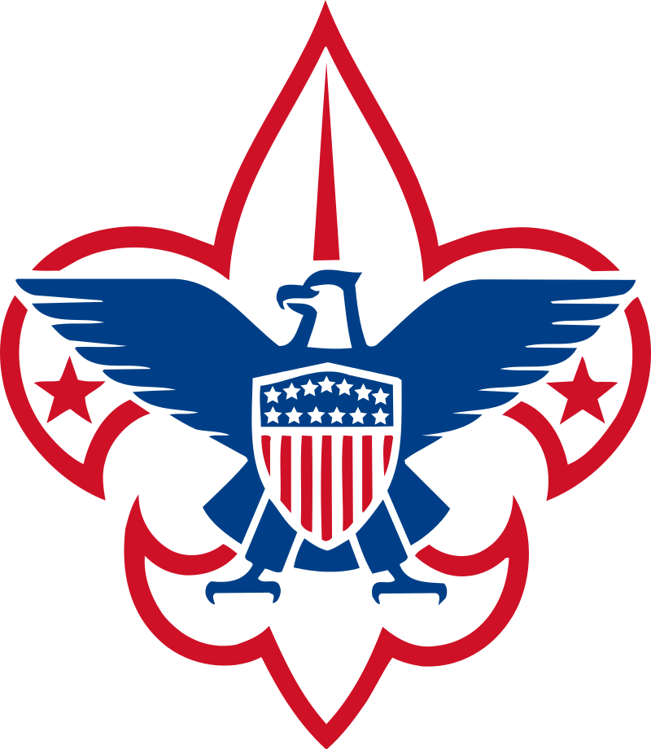

| Name from Req. 2 Role from Req. 2 Address from Req. 2 |
 |
|
| Eagle Candidate: Name, Unit Type & # c/o: Unit Leader's Name Unit Leader's Address Unit Leader's Address |
||
| Pastor Smith Religious 123 Parsons Drive |
||
| Eagle Candidate: Buzzy Bee, Troop 987 c/o: Scoutmaster: Jones 456 Apple Tree Ln. Lansing, MI 48933 |
||